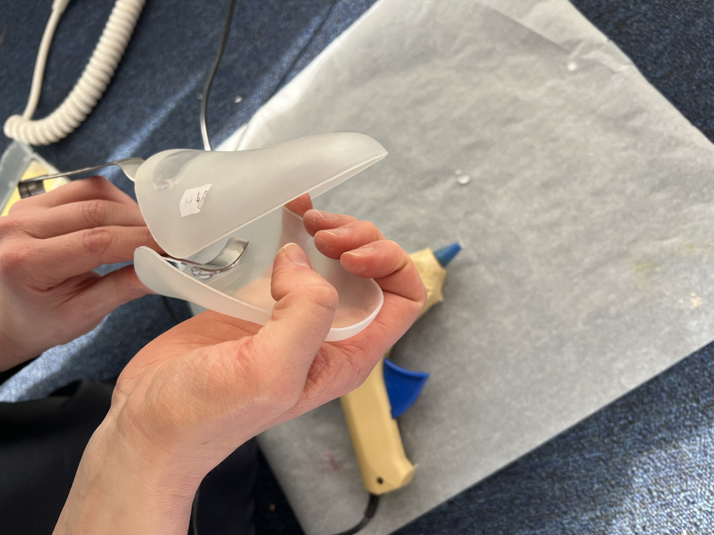
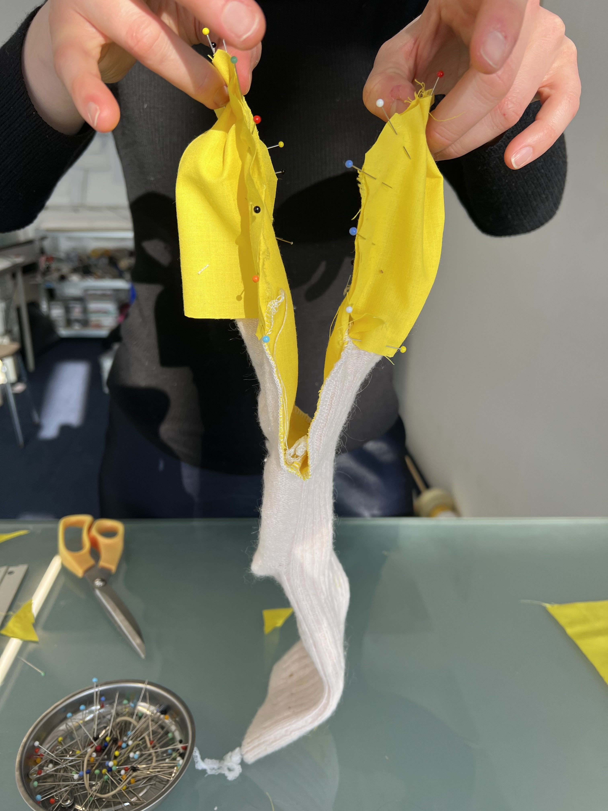
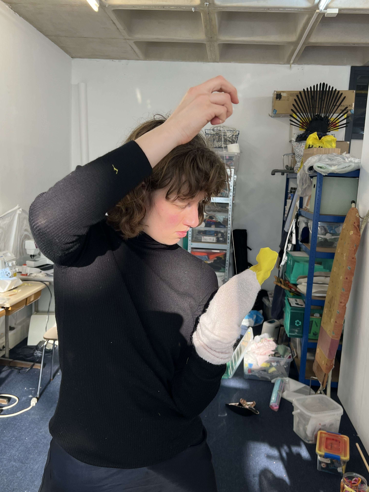
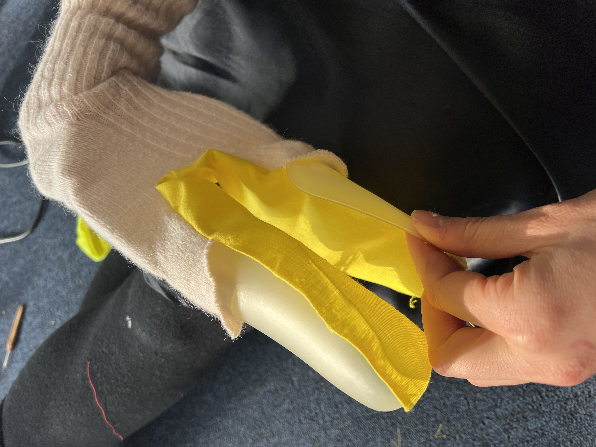

Sock puppet workshop
Me and Laura Snijders will give workshops on making sock puppets and mascots for kids to embody the Haagse nuisance animals!
The sketches, hand puppets and whole-body mascots created by the kids will become part of the figures in the stadstekeningen.
The sketches, hand puppets and whole-body mascots created by the kids will become part of the figures in the stadstekeningen.
Partners
External links

Pasta tang and a pair of shoe trees, boom! It is now the seagull's beak.

We cut the sock up and made pattern for the beak.

Laura sewed them together.

Does the seagull fit my hand?